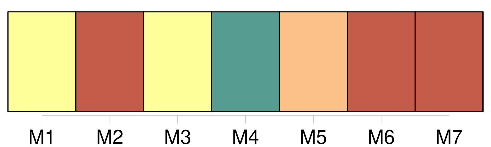

Longueur nb maillons : 35 mentions |
  |
Quelle que soit la nature des faits ou des délits qui donneront lieu à la demande en divorce pour cause déterminée, cette demande ne pourra être formée qu'au tribunal de l'arrondissement dans lequel [les époux] auront [leur] domicile. [22 phrases] Il sera dressé procès-verbal des comparutions, dires et observations [des parties] , ainsi que des aveux que l'une ou l'autre pourra faire.
Lecture de ce procès-verbal sera donnée [auxdites parties] , [qui] seront requises de le signer ; et il sera fait mention expresse de [leur] signature, ou de [leur] déclaration de ne pouvoir ou ne vouloir signer. [1 phrases] Le tribunal renverra [les parties] à l'audience publique, dont il fixera le jour et l'heure ; il ordonnera la communication de la procédure au commissaire du Gouvernement, et commettra un rapporteur. [10 phrases] Aussitôt après la prononciation du jugement qui ordonnera les enquêtes, le greffier du tribunal donnera lecture de la partie du procès-verbal qui contient la nomination déjà faite des témoins que [les parties] se proposent de faire entendre.
[Elles] seront averties par le président, qu' [elles] peuvent encore en désigner d'autres, mais qu'après ce moment [elles] n'y seront plus reçues. [1 phrases] [Les parties] proposeront de suite [leurs] reproches respectifs contre les témoins qu' [elles] voudront écarter. [2 phrases]
Les parens [des parties] , à l'exception de [leurs] enfans et descendans, ne sont pas reprochables du chef de la parenté, non plus que les domestiques [des époux] , en raison de cette qualité mais le tribunal aura tel égard que de raison aux dépositions des parens et des domestiques. [1 phrases]
Tout jugement qui admettra une preuve testimoniale, dénommera les témoins qui seront entendus, et déterminera le jour et l'heure auxquels [les parties] devront les présenter. [1 phrases]
Les dépositions des témoins seront reçues par le tribunal séant à huis clos, en présence du commissaire du Gouvernement, [des parties] , et de [leurs] conseils ou amis jusqu'au nombre de trois de chaque côté. [1 phrases]
[Les parties] , par [elles] ou par [leurs] conseils, pourront faire aux témoins telles observations et interpellations qu' [elles] jugeront à propos, sans pouvoir néanmoins les interrompre dans le cours de leurs dépositions. [2 phrases]
Le procès-verbal d'enquête sera lu tant aux témoins qu' [aux parties] : les uns et [les autres] seront requis de le signer ; et il sera fait mention de leur signature, ou de leur déclaration qu'ils ne peuvent ou ne veulent signer. [4 phrases]
Au jour fixé pour le jugement définitif, le rapport sera fait par le juge commis : [les parties] pourront ensuite faire, par [elles -mêmes] ou par l'organe de [leurs] conseils, telles observations qu' [elles] jugeront utiles à [leur] cause ; après quoi le commissaire du Gouvernement donnera ses conclusions. [8 phrases]
Lorsque le divorce sera demandé par la raison qu'un [des époux] est condamné à une peine infamante, les seules formalités à observer consisteront à présenter au tribunal civil une expédition en bonne forme du jugement de conr damnation, avec un certificat du tribunal criminel, portant que ce même jugement n'est plus susceptible d'être réformé par aucune voie légale. [29 phrases]
L'action en divorce sera éteinte par la réconciliation [des époux] survenue soit depuis les faits qui auraient pu autoriser cette action soit depuis la demande en divorce. [86 phrases]
Dans les cas où il y a lieu à la demande en divorce pour cause déterminée, il sera libre [aux époux] de former demande en séparation de corps. |

|
La ressource peut être téléchargée sur la page Ortolang
Si vous avez des questions ou vous voyez des erreurs, merci d'envoyer un mail à silvia.federzoni89@gmail.com
Site développé par S. Federzoni (contact)